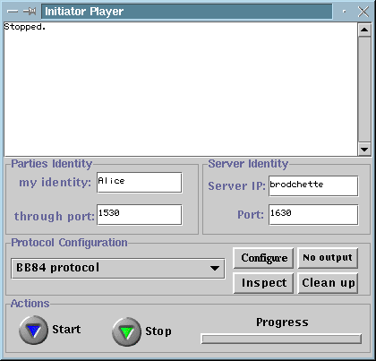

Initiator Player
The initiator player is the party who initiates the execution
of a quantum protocol. It connects to the initiator server and expects
a connection from the responder player. Once those connections are established
the initiator player sends the description of the protocol together with
the selected parameters to the responder player.
If the parameters are accepted by the responder
player then the execution is started. Therefore, the initiator
player is responsible to select both the protocol and the configuration
before a connection with the responder player is established. When
launched, the initiator player looks like that:

The initiator player window contains 4 groups of items
as follow:
Parties Identity:
-
My identity is a string for the identification of
the initator player. The initiator player is usually called Alice in the
litterature but anything can do.
-
Through port is the port number at which the responder
player should connect with the initiator player. The initiator
player should therefore be launched before the responder
player.
Server Identity:
Protocol Configuration:
-
Protocol's selection list is the list of available
protocols for the next execution. It allows the initiator player to select
one protocol among a list of supported protocols.
Next time the start button is pressed the selected protocol will
be executed with the next connecting responder
player.
-
Protocol's configuration button allows to configure
the selected protocol for the next execution. The values will be sent to
the responder player upon connection.
Configuration must take place before starting the player in order for the
changes to take place.
-
Inspect button allows to see the values set for all
parameters of the selected protocol. This does not allow to modify them.
-
Output selection button allows to set or unset the
HTML output generation. When the button indicates No Output then
no output will be generated after the execution. When the button indicates
HTML
output then the output of the next execution will be available from
index file of the previously
selected template directory. The valid template directory provided
with the software is located in qrypto/templates/initiator
for the initiator player's outpout.
-
Clean up button allows to remove some executions from
the index file of the
selected template directory for HTML output generation.
Actions:
-
start/stop button initiates and stops action. Start
must be pressed after the protocol has been selected and parametrized.
It does the following:
-
Connect to the initiator server,
-
Wait for the responder player to connect,
-
Upon connection, the selected protocol is sent to the responder
player.
-
If the protocol has been accepted by the responder player
then the initiator player tells the initiator server to initiate a quantum
transmission of the chosen type,
-
The protocol is executed.
-
After the execution the player stops automatically.
-
progress bar indicates the progress and the
protocol phase currently executed.